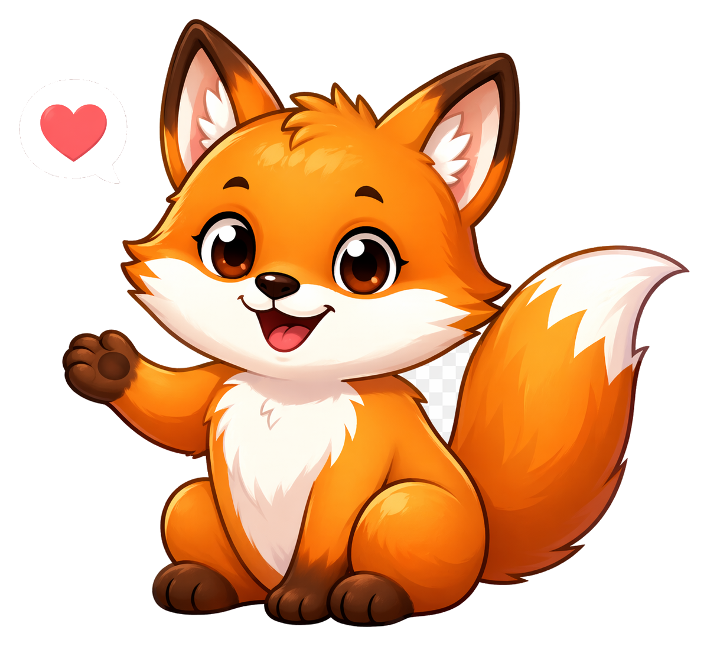
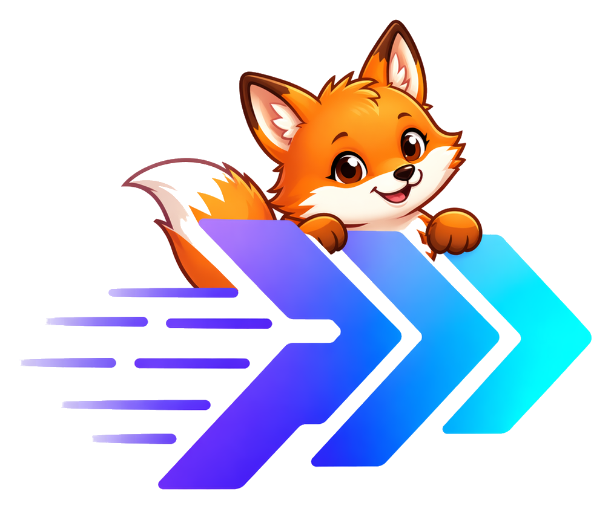
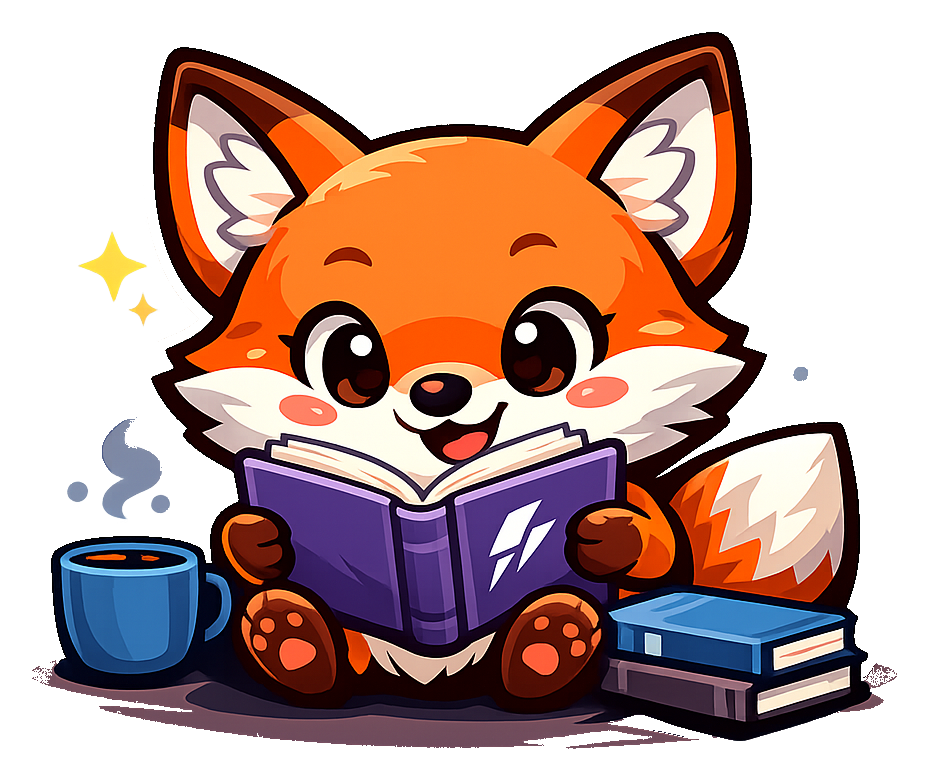
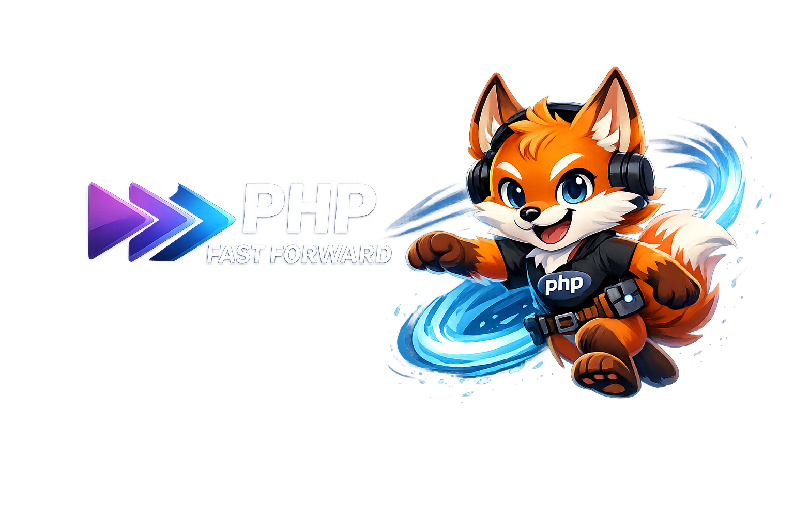
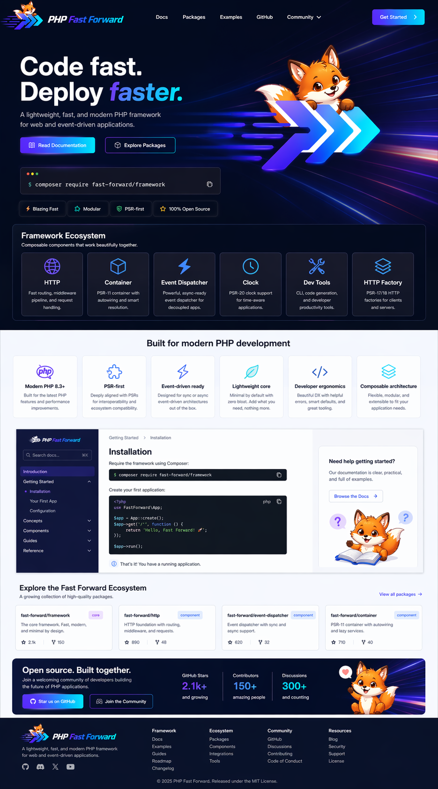
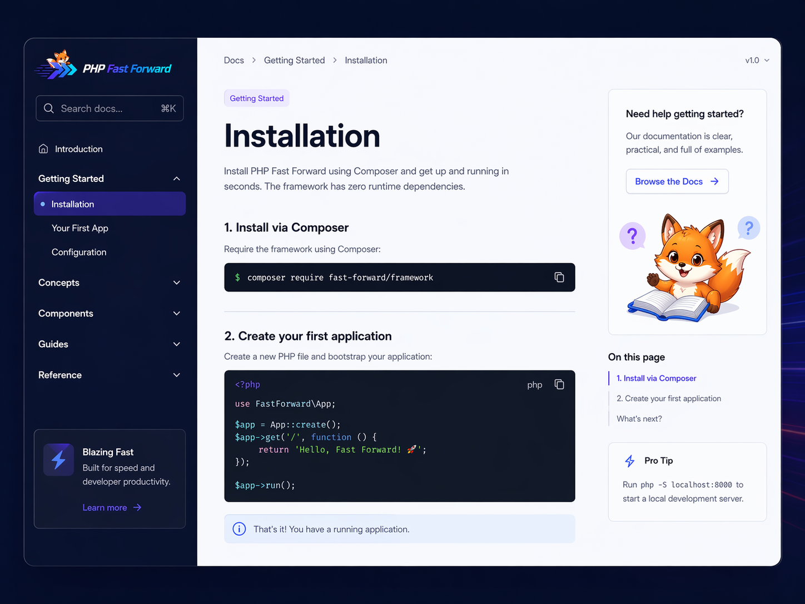

01
Warm, curious faceAmber/brown eyes, a small dark nose, rounded cream cheeks, and a friendly expression.
Identity reference · 2026.10
One curious orange fox. A framework built around composition. A visual language that helps people find their next useful step.
01 / Character anchors
The welcome fox is the primary neutral reference. Pose and props can change. The face, markings, ears, and tail hold the character together.
Amber/brown eyes, a small dark nose, rounded cream cheeks, and a friendly expression.
Orange fur and forehead tuft. Cream muzzle, chest, inner ears, and tail tip.
Large triangular ears, dark paws, a full sweeping tail, and warm brown contours.
Books explain learning. A wave welcomes. A purple hoodie identifies a package costume.
02 / Mascot matrix
Compare the supplied artwork and its actual status. These are selected references, not a fabricated turnaround or a newly redrawn character.
8 references shown

Onboarding, community moments, and thanks. This face anchors new neutral poses.
fox-welcome.pngInstallation guides, first examples, and welcoming a reader into documentation.
fox-reading-wave.pngExplain boundaries, composition, and unfamiliar concepts. Keep the explanation in text.
fox-reading-sparkles.png
Brand identification and editorial heroes. Preserve the chevron direction and hierarchy.
mark-with-fox.png
Purple hoodie, white tool emblem, glossy rendering. An established package family.
dev-tools.png
The pointer pose is useful. Violet eyes are a recorded deviation from the neutral warm-eyed canon.
enum.png
Compare the heavy outline and flatter face. This artwork does not redefine the neutral fox.
fox-coffee-books.png
Headphones and a changed face belong to this exploration, not the shared character baseline.
fox-technical-headphones.png03 / Visual system
Violet, blue, and cyan carry the institutional direction. Warm fox colors bring approachability. Exact UI values live in design.md.
#6D28D9#2563EB#22D3EE#050B20#F28D1A#FFF3DF#592D19#F6F8FF
Dark PHP lettering is readable here. Preserve its proportions and clear space.
This stays legible on navy while a dedicated light-lettered vector master is pending.
04 / Public ecosystem evidence
The imported package images match public main-branch blobs observed on 2026-10-03. Commit URLs keep the comparison reproducible.
Older flat neutral fox and navy ecosystem composition.
View imported artworkPurple hoodie, tool emblem, amber eyes, and console scene.
Pinned sourceGlossy package costume with an explicitly recorded eye-color deviation.
Pinned source05 / Future surfaces
Archived concepts inform layout and atmosphere. Their API, versions, metrics, licensing footer, and claims remain unverified concept content.

One promise, documentation action, selectable installation command, package grid, and a welcoming community section.

A quiet reading surface, clear navigation, accessible code panels, and the fox beside learning moments.